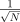
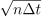
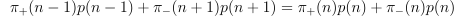
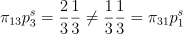
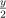
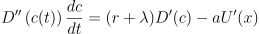
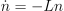

appunti dal corso di
____________________________________________________________________________________________________________________________________________
introduzione alla fisica
dei sistemi complessi
____________________________________________________________________________________________________________________________________________
berselli gregorio lanzi samuele
barbieri matteo farné gabriele
https://github.com/Grufoony/Fisica_UNIBO
Definizione 1.1.1. Sistema Complesso é un sistema dinamico composto da sottosistemi interagenti tra loro, chiamati agenti.
Per lo studio di un sistema complesso si usa solitamente un approccio olistico, ossia si studiano prevalentemente le proprietá macroscopiche del sistema totale, senza considerare i singoli sottosistemi. Un’osservazione importante che va effettuata é che un modello di sistema complesso prevede, non descrive.
Per un numero elevato di gradi di libertá é possibile utilizzare l’approccio della meccanica statistica. Alcune delle proprietá principali dei sistemi complessi sono:
complessitá: presenza di molti d.o.f. (molti agenti)
proprietá emergenti: derivano dal grande numero di agenti. Ad esempio possiamo definire fluido un insieme di molte particelle ma la particella singola non puó essere fluida.
autorganizzazione: i sistemi complessi sono ibridi, ossia metá stocastici e metá deterministici. Per studiarli devo dare ugual peso a entrambi gli aspetti.
La complessitá dei sistemi fa si che per definirne uno stato occorra molta informazione. Ogni sistema complesso fornisce un feedback rispetto alle condizioni inziali che sono fornite. In particolare, si parla di feedback positivo se le condizioni iniziali portano il sistema a "esplodere", ossia ad allontanarsi inesorabilmente dall’origine, mentre si parla di feedback negativo quando dopo un certo periodo di tempo il sistema ritorna alle condizioni iniziali.
In un sistema classico, una volta scritta la lagrangiana (o hamiltoniana) del sistema e ottenute le equazioni del moto, é cosa fatta determinarne l’evoluzione nel tempo (traiettorie). Nei sistemi complessi, tuttavia, non é possibile utilizzare un approccio deterministico: si parla infatti di caos deterministico. Questo caos é causato soprattutto dalle fluttuazioni intrinseche dei sistemi complessi, le quali li rendono particolamente sensibili alle condizioni iniziali. Si consideri sistema alle condizioni iniziali x0. Dopo un tempo t, si troverá naturalmente il sistema in una posizione x(t) determinata dalle condizioni iniziali. Si assuma ora la presenza di fluttuazioni sulle condizioni iniziali x0 + δ0: il sistema evolverá ora come x(t) + δ(t). La teoria vuole che le fluttuazioni seguano l’andamento
|
|
dove il coefficiente λ é detto esponente di Ljapunov. Il calcolo di questo parametro non é banale, pertanto non verrá dimostrato ma solo riportato.
Nonostante il limite precendente appaia complicato, nella maggior parte dei casi é possibile utilizzare l’approssimazione λ ≃ ∑ k ln , dove k indicizza una traslazione temporale Δt. Per comprendere i limiti dell’approssimazione precedente si puó notare come δ0eλt = o(1), quindi ln δ 0 + λt = 0.
Si puó notare come:
l’esponente di Ljapunov é una proprietá dell’orbita, non del punto, ed é quindi necessario interagire su tempi lunghi;
un’alta sensibiltá alle condizioni iniziali implica una scarsa predittivitá;
per λ >> 1 é possibile utilizzare l’approccio statistico;
le proprietá sono locali (ma non cosí tanto locali).
Non é possibile conoscere a priori il segno di λ. Il caos deterministico, ovviamente, si ottiene solo se λ > 0 (l’esponenziale esplode) in un insieme a misura finita. Ne consegue che le orbite debbano espandersi rimanendo limitate, fenomeno noto come stretching-folding, che comporta la conservazione di una misura (volume).
Teorema 1.2.2. di Poincaré (del ritorno)
Un sistema dinamico che conserva i volumi su un compatto ritorna arbitrariamente
vicino alle condizioni iniziali (feedback negativo).
Punto fondamentale di un sistema complesso é costruire un modello che riesca a riprodurre le sue caratteristiche fondamentali, per poi studiarlo. Innanzitutto, per prevedere un sistema occorre:
un modello (matematico) per l’evoluzione;
una conoscenza dello stato presente (o passato) del sistema sufficiente ad inizializzare il modello;
In Fig.(1.1) é presente lo schema operativo della creazione di un modello. Il punto di
partenza é sempre un problema, la cui osservazione sperimentale fornisce i dati
sui quali costruire un modello di teoria . Con esso é poi possibile eseguire delle
predizioni da confrontare con i dati sperimentale per comprenderne l’affidabilitá e gli
eventuali scenari incompatibili. Ovviamente un buon modello teorico deve avere
dei parametri manipolabili (di controllo) e caratteristiche valide universalmente.
Si possono distinguere due tipologie di modelli, le quali verranno ora analizzate.
La prima tipologia di modello sono i modelli ad agente, ossia quei modelli in cui si effettua uno studio di tipo bottom-up (dal particolare al generale). Assunzione fondamentale é di avere piena conoscenza sui comportamenti dei singoli agenti e sull’ambiente in cui questi si relazionano. Una volta formalizzati matematicamente i comportamenti dei singoli é possibile procedere con una simulazione, la quale fornirá una possibile evoluzione del sistema. È essenziale notare come in questo caso il risultato ottenuto sia solamente uno dei tanti possibili: bisognerá quindi effettuare la simulazione numerose volte e mediare sui risultati ottenuti. Riguardo la costruzione del modello, la prima cosa da definire é l’ambiente in cui ci si trova. Questo puó essere neutro o avere caratteristiche, ad esempio una distribuzione di nutrimento (per sistemi biologici). Altro punto fondamentale é definire spazio e tempo. Spesso non fa differenza la scelta di spazi e tempi discreti rispetto ai continui, quindi é preferibile assumere una discretizzazione iniziale per poi passare al continuo successivamente. Una volta definito lo spazio bisogna poi decidere le condizioni al contorno, ossia il comportamento ai bordi. Si possono avere barriere di tre tipi:
riflettenti, dove si ha un bordo non oltrepassabile. Si crea quindi un fenomeno di attrattivitá delle pareti.
periodico, dove si hanno i bordi coincidenti (esco da una parte e rientro dall’altra). Lo spazio assume in questo caso una forma toroidale.
assorbenti, dove gli oggetti "uscenti" vengono distrutti. In questo caso bisogna di introdurre delle sorgenti nel modello per evitare di perdere tutti gli agenti.
Si nota facilmente come piú piccolo sia il modello, piú importante sia il contributo degli effetti
di bordo.
Nella maggior parte dei sistemi non tutti gli agenti hanno le stesse caratteristiche: si
definiscono allora classi di appartenenza, legate tra loro da relazioni matematiche.
La seconda ed ultima tipologia di sistema complesso é data dai modelli a equazioni, ossia quei modelli in cui si effettua uno stduio di tipo top-down (dal generale al particolare). In questo caso si assume di non avere conoscenza sui singoli agenti ma di possedere informazioni di carattere puramente macroscopico, dette osservabili del sistema. Tipicamente, gli osservabili sono legati tra di loro tramite equazioni differenziali le quali, una volta integrate, forniscono un’evoluzione del sistema nel tempo. In questo caso il risultato ottenuto rappresenta giá una media di tutti i risultati possibili: le fluttuazioni del sistema provocheranno quindi uno scostamento da questo valore. Ovviamente, piú tempo si fará evolvere il sistema, piú rilevante sará l’effetto delle fluttuazioni e meno preciso sará il risultato della previsione.
Per l’analisi matematica dei sistemi é utile definire le funzioni di distribuzione, le quali sono indicatori della frequenza di avvnimento di un fenomeno.
La gaussiana, riportata in Fig. (1.2), é nota come la distribuzione degli errori ed é tra le piú importanti funzioni della fisica. Caratteristica principale é la sua discesa molto veloce superata una distanza pari a σ dal valore medio.
L’esponenziale, riportato in Fig. (1.3), é la distribuzione emergente dalla meccanica statistica (fattori di Boltzmann).
La potenza, riportata in Fig. (1.4), é una distribuzione che possiede un’importanate proprietá, detta invarianza di scala.
Teorema 1.4.2. Limite centrale:
Siano xk variabili casuali indipendenti, allora:
lim N→∞z =  ∑
k=1Nx
k = e-
Un sistema che vuole simulare l’evoluzione di una popolazione in spazi e tempi discreti é detto automa cellulare. Si vuole ora creare un automa cellulare con le seguenti caratteristiche:
effetto di riproduzione: consiste in un aumento del numero di individui che si riflette nell’espansione esponenziale del sistema (effetto comune in natura purché le risorse siano sufficienti), ossia
|
|
effetto di competizione: limita la crescita della popolazione. Un individuo compete coi suoi simili, quindi il contributo competitivo sará del tipo
|
|
Assunzione fondamentale di questo modello é che ogni individuo possa incontrare tutti quegli altri, irrealistico in quanto in una rete sociale la probabilitá di incontri varierebbe da individuo a individuo. In un modello continuo si avrebbe
|
|
dove Δt rappresenta il tempo in cui la popolazione evolve (teoria del campo medio), a é il tasso di riproduzione e b il tasso di incontri, questi ultimi assunti costanti. Nel limite Δt → 0 si ottiene l’equazione logistica
| (1.1) |
che altro non é che la rappresentazione continua della mappa logistica
| (1.2) |
ossia la rappresentazione dinamica non lineare piú semplice che degenera in un moto
caotico, resa pubblica nel 1976 dal biologo Robert May.
La stabilitá del sistema si ha ovviamente per n = e la soluzione analitica del problema
diventa
|
|
riscrivibile nella forma di funzione logistica
| (1.3) |
Si puó osservare come i limiti f(t) = ±1 rappresnetino due stati fissi mentre la zona centrale sia di transizione, quindi per f(t) = 0 si avrá la massima variazione.
Il modello piú basilare di sistema complesso é sicuramente la random walk su una retta, ossia un punto che ogni istante di tempo decide in maniera casuale se spostarsi a destra o a sinistra. Sia p = la probabilitá di muoversi verso destra (quindi anche a sinistra) di un passo Δx. Si hanno:
{R}: p(t + Δt) = x(t) + Δx
{L}: p(t + Δt) = x(t) - Δx
Dopo n passi si ha quindi p(nΔt) = x0 + ∑
kξkΔx con ξ(t) = ±1. Inoltre si puó verificare che
< ξk >= 0, < ξk2 >= 1, < ξ
kξh >=< ξk >< ξh >,k≠h. Per il teorema del limite centrale si
ha: ∑
knξ
kΔx =  = e-
, con z variabile gaussiana.
Introducendo il concetto di diffusione:
si puó descrivere l’evoluzione del sistema come x(t) = x0 + z Si utilizza per
normalizzare in quanto é l’unico esponente non divergente. La varianza della gaussiana
cresce nel tempo, infatti calcolando i momenti della distribuzione si trova < x(t) >= x0,
< (x(t) - x0)2 >= Dt. Se la topologia del sistema fosse una circonferenza (e non
una retta), si avrebbe un rilassamento esponenziale a una situazione stazionaria.
Definito un intervallo -L,L sulla retta, la probabilitá che il punto vi sca dopo un tempo t
é data da:
| (1.4) |
Si puó facilmente notare come raddoppiando la distanza L il tempo t quadruplichi.
Volendo espandere il modello di random walk ad uno spazio 2D si nota subito come,
essendo ogni asse indipendente dall’altro, si possa semplicemente comporre due
gaussiane:
|
|
Dove la diffusione segue la definizione precedente ed é la stessa in tutte le direzioni. La funzione ρ(x,y,t) rappresnta di fatto la probabilitá che la il soggetto in analisi si trovi in un volume ΔxΔy. Si puó riscrivere la relazione precedente in coorfinate polari ottenendo:
|
|
studiando piú semplicemente l’allontanamento dall’origine. In particolare, l’allontanamento medio risulta:
|
|
e la densitá diminuisce quindi esponenzialmente.
Si consideri ora una random walk 1D con probabilitá non uniforme in un reticolo di passo Δx. Sia ϵ un parametro e si definiscano le probabilitá:
|
|
Si puó verificare facilmente come le probabilitá siano ben definite. Il sistema tende a muoversi piú velocemente nel verso positivo delle x e piú lentamente nel verso opposto, assomigliando a una scatola con aria a diversa temperatura: vi é quindi un equilibrio locale (ogni nodo é identico). Si puó osservare come:
|
|
Ogni passo ho un enemble differente, quindi lo spazio non é omogeneo. Ponendo T(x) =< Δx2 > come funzione corrispondente alla temperatura fisica, si ottiene un gradiente costante:
|
|
Questo gradiente si ritrova spesso in natura, ad esempio i batteri variano la velocitá di movimento (casuale) dei loro flagelli seguendo un gradiente di cibo. Per essere apprezzabile la variazione di temperatura deve essere tale che ΔT = Δx ∝ Δx3 e in un limite continuo si ottiene:
|
|
Andando a calcolare media e mediana del sistema si nota come:
|
|
In conclusione la maggior parte delle particelle si trova nella zona fredda (x < 0), come vuole la fisica, ma la media della distribuzione si trova nella zona calda (x > 0).
Consideriamo di avrere n0 individui iniziali su una griglia (spazio discretizzato) che si muovono seguendo una Random Walk 2D e soggetti alle seguenti restrizioni:
se un individuo ha spazio sufficiente, si riproduce in un tempo Δt, allora si deve avere Δn(t) ∝ n(t);
se due individui competono per lo stesso spazio, uno dei due soccombe con una certa probabilitá p, il che implica Δn(t) ∝-n2(t);
Si osservi come il termine n2(t) conti il numero di coppie. Definita la scala di tempo Δt, in un modello continuo si deve avere (teoria del campo medio):
|
|
con a parametro di riproduzione e competizione nella popolazione (dato dall’ambiente). Imponendo l’equilibrio
|
|
si ottengono i punti critici n = 0, instabile, e n = stabile. La soluzione al sistema é quindi del tipo
| (1.5) |
e la funzione logistica del sistema é
| (1.6) |
Consideriamo un gatto su un toro Π2 (ciambella) in gradi di muoversi secondo la:
|
|
Risulta ovvio come
|
|
quindi si conservino le aree. Calcolo degli autovalori:
|
|
e si ottengono
|
|
Il sistema dilata densamente lungo la direzione v+ dell’autovettore λ+ > 1. Dato un vettore iniziale x0, (x0 ⋅ vt)λtn ⇒ ln λ t é l’esponenziale di Ljapunov.
In Fig.(1.6) é rappresentata un’applicazione della catmap su un insieme di punti. Si puó
notare come una volta fatto evolvere il sistema partendo dall’area nera, questo non
ritorni nella condizione iniziale applicando la trasformazione inversa (area verde).
Problema: data una distribuzione di punti ρ0, cosa succede a ρ0(Tnx)?
Per definizione, data una distribuzione ρ(x), questa deve essere normalizzata
∫
Π2ρ(x)dx = 1. L’equazione di continuitá permette di imporre la conservazione del numero
di particelle:
|
|
in cui si riconosce = det = 1, quindi ρ0 evolve in una distribuzione di particelle. Si puó ora constatare che, se I(x) é un osservabile del sistema, vale la relazione:
|
|
La teoria suggerisce l’esistenza di una distribuzione invariante ρs = ρ s. Sia ora χA(x) la funzione caratteristica del dell’insieme A, e ρ0(y) = , I(x) = χB(x). L’integrale precedente diviene:
| (1.7) |
e si é cosí dimostrato il teorema 1.2.2.
Si vuole ora costruire un primo modello legato alla realtá simulando, per quanto
grossolanamente, l’economia globale.
Supponiamo di avere M individui con n soldi ciascuno, che si muovono su una griglia
secondo una Random Walk 2D. Ogni qualvolta due individui si trovino sulla stessa cella
questi si scambiano 1 soldo con probabilitá p = .
Caso limite: se si incontra un povero (n = 0), si gioca lo stesso (gioco scorretto)
per permettere a tutti di uscire dalla povertá. Il sistema ha quindi i seguenti
limiti:
|
|
con N costante, quindi non si ha creazione/distruzione di denaro. La probabilitá di trovare un individuo con n soldi é:
|
|
e, ponendo n = , si puó calcolare:
| (1.8) |
quindi la probabilitá decresce esponenzialmente.
Il modello prevede quindi:
molti poveri e pochi ricchi (ma praticamente nessun super-ricco)
esiste un tempo in cui un povero diventa ricco (e viceversa)
simile alla distribuzione di energia di Maxwell-Boltzmann
se chi é ricco pagasse di piú si otterrebbe una curva a campana
Tuttavia osservando i dati sperimentali si nota una discrepanza: nella realtá la probabilitá sembra seguire una legge a potenza piuttosto che esponenziale. Pur non trovando riscontro nella realtá, si é appena dimostrato stocasticamente il fattore di Boltzmann e-βϵ. Si puó quindi pensare il denaro come un’energia interna al singolo mentre la probabilitá di scambio rappresenta la temperatura statistica del sistema.
Per adattare il modello precedente alla realtá si introduce una microdinamica sugli scambi
di denaro.
Sia π± la probabilitá di guadagnare ±1 soldi se un soggetto ne possiede n. Il sistema
possiede una struttura di catena:
Definizione 1.5.2. Struttura di catena.
Un modello ha struttura di catena quando il flusso in una direzione implica un secondo
flusso nella direzione opposta.
A causa di questa struttura, all’equilibrio si deve avere:
|

|
e in particolare é verificato il bilancio dettagliato:
| (1.9) |
Normalizzata la distribuzione é possibile iterare il tutto:
 |
Riscrivendo un maniera piú comoda il bilancio dettagliato, si puó poi procedere:
|
|
|
|
Si possono notare ora le seguenti dipendenze, introducendo la coppia di parametri costanti (a, b):
|
|
Cercando ora l’andamento di p(n):
| (1.10) |
si ottiene esattamente l’andamento a potenza ricercato.
Si consideri un giocatore d’azzardo con a disposizione un capitale k e che vuole arrivare ad un capitale M. Il gioco finisce ai “bordi” (barriera assorbente) per k = 0 (giocatore rovinato) o per k = M (giocatore felice). Siano p la probabilitá di guadagnare, q = 1 -p la probabilitá di perdere, PM(k) la probabilitá di arrivare al capitale M partendo da k. Come nel modello economico evoluto si ha:
|
|
con i vincoli
|
|
Ragionando per induzione si ottiene:
|
|
| (1.11) |
Inoltre,
| (1.12) |
In particolare, considerando un gioco equo, si puó notare come PM(k) = e quindi:
il gioco é alla pari solo se k ≃ M
la probabilitá di vincita aumenta all’aumentare del proprio capitale rispetto a quello avversario
contro un casinó (M → ∞) la probabilitá di vincita é evidentemente nulla anche in caso di gioco equo (assunzione oltretutto inverosimile)
Data una distribuzione di probabilitá ρ(x) normalizzata (integrale sul dominio uguale a 1) é possibile procedere con le seguenti definizioni:
Definizione 2.1.3. Probabilitá stazionaria
La probabilitá stazionaria é il numero di volte che un evento accade in una sequenza.
Teorema 2.1.1. legge dei grandi numeri
Siano A e B due eventi distinti (osservati N volte), allora si ha che
lim N→∞ = p(B∕A)
Definizione 2.1.4. Sia x una variabile aleatoria con un sample {x1,…,xn} di osservazioni ordinate tali che x1 ≥ x2 ≥ …. Allora xj = f(j) é detta ranking distribution.
Solitamente tale distribuzione é normalizzata in modo che yj = . Per definizione la frequenza di un evento é , quindi la distribuzione cumulata risulta
| (2.1) |
con J(xj inverso del ranking. La funzione di distribuzione sará quindi
| (2.2) |
Si supponga di voler calcolare l’incertezza di una distribuzione di probabilitá p1,…,pn per gli eventi {x1,…,xn}. Si assuma:
H(p1,…,pn) continua;
se pj = allora H(,…,) é monotona crescente;
Dati gli eventi composti y1 = {x1,…,xm}, y2 = {xm+1,…,xm+k} con probabilitá
P(yi∕xi) = , allora
H(p1,…,pn) = H(w1,…,wn) + w1H + w2H + …;
La soluzione é del tipo H(p1,…,pn) = -ks ∑ ipi ln(pi) dove si definisce
con ks = costante di Shannon. Si puó notare come H(p1,…,pn) sia massima per pj = . Fissato = ∑ jxjpj, l’entropia é massimizzabile utilizzando i moltiplicatori di lagrange:
|
|
il che implica - ln pj + λxj = 0, con soluzione
| (2.3) |
con λ ≃- (risultato fondamentale della meccanica statistica). La distribuzione é quindi
esponenziale, con pj ∝ e- .
.
Si consideri una sequenza (codifica) {xk}1N: si puó assumere P({x k}) = p(x1)...p(xN). Una codifica é detta ottimale se puó descrivere in maniera univoca un’orbita.
Si nota subito come piú un valore della variabile di coding é probabile, minor informazione questo porti. Informaticamente, la misura é circa il numero di bit necessari per memorizzare la sequenza (da qui il fattore ln 2 dell’entropia di Shannon). L’equazione 2.2.1 rappresenta quindi l’informazione media portata da un singolo carattere. Non bisogna confondere entropia con informazione: la variabile deve avere un significato! Data l’indipendenza dei caratteri, si puó scrivere l’entropia di una coppia come
|
|
Iterando il ragionamento si giunge alla conclusione che l’entropia di Shannon misura l’aumento di informazione data dall’aggiunta di un carattere.
Si é analizzato finora il caso di caratteri indipendenti gli uni dagli altri. Tuttavia, per comprendere una sequenza bisogna, in generale, conoscerne la memoria, ossia tutte le dipendenze di un evento dagli altri. Formalmente, ció vorrebbe dire che, dati due eventi A e B, P = P P(A)≠P(A)P(B). Si puó facilmente osservare come lim N→∞ = P, dove N rappresenta il numero totale di eventi. L’irreversibilitá di un evento si ha quando la coppia di eventi AB é diversa dalla coppia di eventi BA.
La matrice stocastica ha per definizione le seguenti proprietá:
0 ≤ pij ≤ 1
∑ jpij = 1
Questa matrice é molto importante, essento intrinsecamente legata alla probabilitá condizionata, ed é alla base di ogni problema di trasporto. Si consideri ora una sequenza infinita e sia pi la probabilitá di avere l’elemento xi in quella posizione. Qual é la probabilitá pj di avere l’elemento successivo? Sia n il numero di passi per arrivare in posizione i, allora:
| (2.4) |
Risulta quindi utile il seguente teorema:
Corollari:
pjs é un vettore stazionario situato nel primo quadrante
l’iperpiano ∑ i,jpijvi = ∑ ivi = 0 sono invarianti per pij
λi < 1 ∀i≠0
pjn+1 = ∑ ipijpjn = 1 ⇔∑ ipin = 1
A questo punto si puó calcolare come cambi quantitativamente l’informazione di una catena aggiungendo un carattere.
Definizione 2.3.4. Proprietá di Markov (di tempo presente)
P({x1,...,xn+1}) = P(xn+1∕Pxn)P({x1,...,xn})
Si puó quindi calcolare l’entropia dell’(N+1)esimo passo
|
|
ottenendo, nel limite N >> 1, l’espressione:
| (2.5) |
Nei linguaggi l’aggiunta di un carattere non cambia di molto l’entropia (per fortuna, altrimenti sarebbe molto difficile parlarsi, ndr). Questa entropia fornisce tuttavia un’importante risultato sulla reversibilitá del processo: se invertendo il tempo non ho differenza di entropia, allora il processo é reversibile, altrimenti no. Le fluttuazioni di un sistema all’equilibrio sono sempre un processo reversibile, infatti osservando tale sistema non si riesce a distinguere tra passato e futuro. Come esempio per giustificare la precedente affermazione si puó prendere un pendolo fisico in assenza di attriti/forse esterne, oppure un moto browniano. Un esempio grafico puoó essere rappresentato dalla Fig.(2.1).
Associando la matrice
|
|
si ha eguale probabilitá di transizione in ogni direzione ammessa dal grafo. L’evoluzione temporale é data da
|
|
e si verifica facilmente che il sistema é reversibile con distribuzione stazionaria
|
|
Considerando invece la matrice
|
|
si aumenta la probabilitá di percorrere il triangolo in senso antiorario. Essendo la distrubuzione stazionaria identica al caso precedente si puó studiare la reversibilitá con il bilancio dettagliato:
|

|
Secondo Onsager, la distribuzione stazionaria corrisponde all’equilibrio quindi,
analizzando le fluttuazioni é possibile capire se il sistema sia reversibile o meno.
Nell’esempio riportato in Fig. (2.1) é evidente come la rimozione del punto A non
influenzi il sottosistema BC: é questo l’equilibrio dettato dal bilancio dettagliato.
In conclusione, la teoria dell’informazione é applicabile quasi in ogni ambito.
Sono stati effettuati studi sui linguaggi, premiando finlandese e tedesco come
lingue piú entropiche, e studi sulla musica, che vedono Bach meno entropico di
Hindemith.
Sia xn = 2n un numero, con n ≥ 1. Qual é la probabilitá che esso abbia un 7 come prima
cifra?
Supponendo 2n = 7.× 10k, allora log 2n = log 7. + k. Si consideri ora la
dinamica
| (2.6) |
che rappresenta sostanzialmente una traslazione nell’intervallo [0, 1]. In questo caso l’esponente di Ljapunov é nullo in quanto non vi é espansione. Iterando la 2.6 si ottiene
|
|
e la misura invariante risulta quindi una distribuzione uniforme nell’intervallo [0, 1]. Da qui la probabilitá lim n→∞P(7) = log 8 - log 7.
Supponiamo di possedere un mazzo di N carte differenti e di pescare da esso k ≤ N carte. Per calcolare l’entropia di informazione associata alla mano pescata, bisogna innanzitutto calcolare la probabilitá di una mano singola. Le combinazioni di k carte di un mazzo di N carte sono date dal coefficiente binomiale:
| (2.7) |
Assumendo che il mazzo non sia truccato, quindi che ogni estrazione sia equiprobabile, la probabilitá di ogni singola mano é pi = . L’entropia di informazione (o di Shannon) associata ad essa é quindi
|
|
con kS = costante di Shannon.
Si consideri un segmento di lunghezza unitaria nel quale viene inserito casualmente un punto x1 ∈ [0, 1] secondo una distribuzione uniforme. Si scarti ora il segmeno [0,x1] e si iteri il processo per N volte: si tratta di un processo ricorsivo con memoria del passato. Essendo la distribuzione di probabilitá uniforme risulta ovvio come < x >= quindi é possibile riscalare il tutto con una variabile y → Definita la densitá ρ del sistema si puó scrivere:
|
|
Il risultato é una legge a potenza con α = -1, quindi non normalizzabile in quanto l’integrale diverge. Il sistema ha un effetto di memoria assoluta: una volta tagliato il segmento non é possibile riattaccarlo. Se il segmento non venisse tagliato si otterrebbe un andamento a potenza con α ≥ 1 e risulterebbe pertanto normalizzabile. Un’utile applicazione dei modelli di Markov si trova nel linguaggio (verbi) e in biologia (DNA).
Si prenda una moneta e la si lanci all’infinito. Si vuole scommettere con un’altra persona su una terna di uscite consecutive dai lanci e ci si chiede come si possa vincere piú facilmente. Analizzando attentamente il problema si puó notare come l’uscita delle sequenze non sia casuale ma segua un percorso ben preciso: l’unica sequenza casuale é quella data dalle prime tre uscite.
In questo modo risulta abbastanza semplice fregare l’ avversario: facendolo
scegliere per primo, é sempre possibile scegliere una sequenza piú probabile della
sua.
Eseguendo i calcoli si nota subito come la probabilitá stazionaria del sistema sia data da
3 = = 12.5%. Scegliendo per secondi si vince sempre a meno che la sequenza
dell’avversario non esca dai primi tre lanci, quindi eseguendo i calcoli sulle probabilitá si
ottiene la seguente tabella:
| 1st player’s choice | 2nd player’s choice | 2nd player’s winning chance | |
| HHH | THH | 87.5% | |
| HHT | THH | 75.0% | |
| HTH | HHT | 66.7% | |
| HTT | HHT | 66.7% | |
| THH | TTH | 66.7% | |
| THT | TTH | 66.7% | |
| TTH | HTT | 75.0% | |
| TTT | HTT | 87.5% | |
Nel primo e nell’ultimo caso si nota facilmente come la vittoria sia certa ammesso che
non esca la tripletta scelta dal giocatore 1. Essendo la probabilitá stazionaria ,
P1,8 = 1 -3 = .
Nel secondo e nel penutlimo caso si puó ragionare in modo analogo al caso precedente,
ottenendo P2,7 = 1 -2 = .
In tutti gli altri casi la probabilitá é data da P3,4,5,6 = + P(player1)… = ∑
n=0∞n = .
Consideriamo due punti (A e B) di un generico spazio e colleghiamoli con un canale immaginario, facendo riferimento alla Fig.1, possiamo definire il flusso ΦA→B di una quantitá fisica trasportata nell’unitá di tempo tra i due punti.
Definiamo V A∕B una certa proprietá del nodo A∕B, questa proprietá ne definisce lo stato. Possiamo quindi scrivere una sorta di legge di Ohm per la situazione descritta
|
|
dove R é una proprietá del link (ad es. la portanza di una strada ma anche la probabilitá di transizione). Osserviamo che é di notevole importanza la dimensione del link (L) in quanto se attraversiamo il link abbiamo un flusso Φ, di conseguenza la capacitá del sistema di trasporto richiede ΦL di “veicoli".
Il problema alla base del modello di Hopfield consiste nel far memorizzare al network un insieme di p patterns ξiμ in modo tale che se presento un nuovo stato ζ i il network mi restituisce il pattern che piú si avvicina a ζi. Etichettiamo ogni pattern con l’indice μ = {1,…,p} e le unitá del network (neuroni) con l’indice i = {1,…,N}.
Definizione 3.2.1. (Distanza di Hamming) La distanza di Hamming tra due pattern rappresenta il numero di bit che li differenzia tra loro.
|
|
Denotiamo lo stato dei neuroni con Si = ±1 (+1 se il neurone é attivo e -1 se é inattivo). La dinamica discreta del network si puó scrivere come
| (3.1) |
con Δt = 1. La matrice wij é la matrice dei pesi delle connessioni tra neuroni i → j ed ha le proprietá di essere una matrice simmetrica (wij = wji) ed avere gli elementi sulla diagonale tutti nulli (wii = 0). Per questo tipo di dinamica i pattern memorizzati risultano essere degli attrattori Fig. 6.
Per motivare la scelta dei pesi delle connessioni consideriamo un caso semplice in cui abbiamo soltanto un pattern. La condizione per la quale il pattern risulta stabile é
| (3.2) |
che risulta essere vera se definiamo la matrice dei pesi come segue
| (3.3) |
infatti ξj2 = 1. Ne deriva che se considero uno stato di rete S
i che differisce di qualche bit
dal pattern che ho inzialmente mostrato al network, lo stato evolverá con la dinamica in
equazione (3.1) e rilasserá a ξi. Tuttavia esiste un altro stato attrattivo: lo stato opposto
(-ξi).
Il discorso puó essere esteso anche al caso molti pattern? In tal caso possiamo
ridefinire la matrice dei pesi come sovrapposizione delle matrici associate ad ogni
pattern
| (3.4) |
questa é spesso chiamata regola di Hebb. Esaminiamo la stabilitá di un particolare pattern, la condizione di stabilitá generalizzata risulta
| (3.5) |
imponiamo Sj = ξjν
| (3.6) |
cioé i patterns devono soddisfare alla condizione di ortogonalitá e sotto questa condizione si ha che la distanza di Hamming é massima. Cosa succede se i pattern memorizzati non sono tutti ortogonali tra loro? Consideriamo la quantitá
| (3.7) |
l’espressione tra parentesi la chiamiamo termine di crosstak. Se Ciν é negativo allora il termine di crosstalk ha lo stesso segno di ξiν quidi non abbiamo un cambiamento dello stato, al contrario se Ciν > 0 abbiamo un flip dello stato del nodo. Ipotizziamo che i pattern siano variabili casuali a media nulla e varianza unitaria, quindi é possibile applicare il teorema del limite centrale e ∑ μ≠νξiμξ jμξ iν → z é una variabile gaussiana Fig. (3.5):
= 0
= Np
Allora ha varianza σ =
é anche possibile stimare la probabilitá di errore come
| (3.8) |
Introduciamo anche qui il concetto di funzione energia o hamiltoniana del sistema per analogia con il Modello di Ising, trattato nelle sezioni precedenti. Facendo quindi riferimento all’equazione (1.4):
| (3.9) |
un esempio di possibile landscape energetico puó essere immaginato come in Fig. (3.6). La proprietá principale dell’hamiltoniana (3.9) é quella di essere sempre decrescente (o costante) se il sistema evolve secondo la dinamica deterministica. É facile verificare questa affermazione: prendiamo Si′ un nuovo valore di S i
| (3.10) |
se Si′ = S i l’energia rimane immutata mentre, negli altri casi Si′ = -S i scegliamo un termine che coinvolge Si
| (3.11) |
i due termini risultano essere entrambi negativi.
Abbiamo mostrato che la regola di Hebb ci fornisce un sistema dinamico discreto che possiede degli attrattori ricercabili anche attraverso i minimi locali della funzione energia. Non abbiamo peró mostrato che questi attrattori sono gli unici. Infatti, per ogni attrattore ξiμ esiste anche l’inverso, anch’esso attrattore -ξ iμ. È possibile mostrare che esistono degli stati stabili detti stati misti ξimix che non coincidono con nessun pattern ma rappresentano una combinazione lineare di un numero dispari di essi, nel caso piú semplice:
| (3.12) |
Esiste anche un altro tipo di stati stabili che si verificano quando p é abbastanza grande rispetto ad N, questi stati non sono correlati in alcun modo con altri patten memorizati e sono chiamati stati vetro di spin. Questi ultimi due tipi di stati sono detti stati spuri.
Nel Modello di Hopfield viene introdotto un concetto analogo a quello di temperatura, intesa come disordine termico, per tenere conto delle fluttuazioni dovute a varie cause non controllabili. Si tratta piú propriamente di una pseudo-temperatura, in quanto non ha nulla a che fare con le dimensioni fisiche né con il significato fisico di una temperatura. Spesso si lavora con la temperatura inversa β definita da
| (3.13) |
Come nel Modello di Ising, anche nel Modello di Hopfield l’evoluzione del sistema é quindi governata dalla competizione tra la presenza di un campo esterno, che tende ad allineare gli stati delle unitá e prevale per basse temperature, e l’effetto del disordine termico che prevale ad alte temperature. Per tenere conto delle fluttuazioni, occorre introdurre una dinamica stocastica, valida per temperature finite, che si riduce alla di- namica deterministica esposta fin’ora nel limite T → 0. Ció puó essere fatto mediante la Dinamica di Glauber, sostituendo la regola dinamica deterministica (3.1) con la regola dinamica stocastica di Glauber. Ad ogni step temporale verrá aggiornata secondo
| (3.14) |
con
| (3.15) |
che puó essere riscritta come (Fig. 9)
| (3.16) |
Per β →∞, ovvero T → 0, fβ tende alla step function che descrive la regola dinamica deterministica, mentre per β → 0, ovvero T →∞, fβ →, ovvero gli stati delle unitá sono completamente randomici. Notando che 1 -fβ(hi) = fβ(-hi), la regola dinamica stocastica puó essere scritta come
| (3.17) |
La teoria del controllo é quella branca della fisica che studia come controllare i sistemi dinamici. L’obiettivo principale é quello di creare un controllo, ossia un modello/algoritmo, in grado di portare un sistema dinamico in un determinato stato dato uno stato iniziale (in input).
Definizione 4.1.1. Il modello é detto ottimale quando si é raggiunto un buon livello di stabilitá, minimizzando i riratdi e gli errori.
Il dispositivo che gestisce il sistema dinamico é detto controllore e va selezionato accuratamente in base alle richieste del sistema da gestire. Formalmente il controllo viene immesso nel sistema attraverso una forzante che, aggiunta alla lagrangiana, permette lo studio e l’ottimizzazione del problema. Per maggiori informazioni sulla meccanica analitica é possibile consultare gli appunti delle lezioni al link https://github.com/Grufoony/Fisica_UNIBO/blob/main/Appunti_meccanica_analitica.pdf.
Si supponga ora di voler studiare un sistema biologico quale, ad esempio, il cuore umano.
Il battito cardiaco stilizzato in Fig 4.1 suggerisce un modello in cui:
il sistema abbia un equilibrio (al quale ritorna periodicamente)
esiste una soglia trigger di un’onda
L’idea é ridurre la cellula cardiaca ad un sistema complesso a due variabile, x per la lunghezza della fibra e b per lo stimolo elettrochimico da associare ad essa (controllo elettrico). Il modello di Zeeman é rappresentato dal sistema
| (4.1) |
in cui la prima equazione ricorda l’equazione logistica (Eq. 1.1). Il fattore infinitesimo ϵ garantisce una scala di evoluzione rapida.
L’equilibrio stabile si ha sulla nullclina = 0, quindi per x = x0 e b = -x3 + Tx, il cui grafico é riportato in Fig. 4.2 I punti A e B sono ovviamente i punti critici del sistema: la parte di curva compresa tra i due punti non é esplorabile in quanto da B é solo possibile ricadere sul ramo di A e viceversa. Questa é l’idea della catastrofe di Zeeman, ove per A < b < B perdo l’invertibilitá del sistema. Se si é in presenza di uno stimolo ad onda quadra che riesce a spostare il sistema oltre il punto B (facendolo quindi ricadere su A) si ha la contrazione (sistole e diastole, vedi Fig. 4.3)
Volendo ora dimostrare formalmente la stabilitá del punto di equilibrio (x0,b0) é conveniente lavorare in un intorno di esso:
|
|
Linearizzando il sistema
|
|
ei ottiene la matrice
|
|
con determinante > 0. Data la presenza di un quadrato la stabilitá non dipenderá dal segno di x0 quanto dal suo modulo. Il determinante positivo implica autovalori entrambi positivi o entrambi negativi: si avranno autovalori positivi, quindi un punto instabile, se la traccia é positiva e viceversa. Si assuma ora di voler introdurre una funzione periodica x+(t) di periodo sufficiente per effettuare il “salto”.
|
|
Ora é possibile accoppiare due cellule cardiache come segue
|
|
con x(0) ≃ x0 e y(0) ≃ x1 punti di equilibrio. Per fare in modo che il sistema sostenga l’onda (senza il bisogno di uno stimolo esterno) é necessario un accoppiamento in controfase, ossia quando la cellula x é in contrazione la y é in dilatazione e viceversa. Creando una catena di questi oggetti é possibile quindi generare un fenomeno d’onda.
L’esempio piú classico di sistema controllabile é dato dal pendolo rovesciato.
Siano xC(t) la coordinata del controllore, xO(t) la coordinata del pendolo di lunghezza l e θ l’angolo formato da esso con la verticale. Utilizzando la meccanica lagrangiana:
|
|
|
|
La lagrangiana del sistema si puó scrivere come:
 |
alle piccole oscillazioni (θ ≃ 0 e mgl cos θ ≃-mgl):
 |
L’equazione del moto risulta infine:
| (4.2) |
Riconosciuta la forzante, per semplicitá si pone ẍC = ±a(t) costante. La soluzione non é omogenea:
|
|
Assumendo ora θ0 ≃ 0 e 0≠0 e che il pendolo si stabilizzi in un tempo T si ha la soluzione stabile:
|
|
Si puó ora ricavare la condizione richiesta:
| (4.3) |
Andando a imporla si ottiene:
|
|
Da cui si puó ricavare il periodo di stabilitá:
| (4.4) |
Un’osservazione importante riguarda la condizione critica del sistema, ove esso non risulta piú controllabile, che si ha quando 0 = .
Si supponga ora di voler controllare una relazione con un’altra persona, che tipo di relazione conviene studiare? La scrittrice Anna Karenina sembra fornire una soluzione al problema, constatando che tutte le relazioni felici sono uguali ma ogni relazione infelice lo é a modo suo. Sia ora x(t) il grado di felicitá nella relazione che, per semplicitá si assume positivo (x(t) ∈ ℝ+) in accordo con l’ipotesi della Karenina. L’equazione che descrive la relazione sará del tipo:
| (4.5) |
in cui riconosciamo la funzione costo c(t) della relazione (ove per costo si intende uscire a
cena, fare un regalo, ecc...),il parametro r (quanto la felicitá tenda a diminuire) e il
parametro a (amplificazione del costo). La relazione giungerá al termine una
volta arrivati ad un valore minimo della felicitá, che verrá denotato come xm.
Per rafforzare il modello si introducono ora due potenziali:
U(x), utility potential, il quale indica quanto funziona la coppia. Esso deve essere tale che U′(x) > 0 ma U′′(x) < 0, in quanto troppa felicitá tende a saturare la relazione;
D(c), disutility potential, il quale tiene conto dello sforzo eseguito. Piú il costo del mantenimento della relazione aumenta, piú essa tende a fallire (non ne vale la pena). Ovviamente D(c) deve avere un minimo, dato che esiste uno sforzo considerato accettabile per mantenere la relazione;
Si puó ora definire il funzionale di soddisfazione come:
|
|
dove il coefficiente λ-1 rappresenta la scala di memoria del sistema.
Per ottimizzare il problema si deve avere
|
|
e quindi la variazione infinitesima del funzionale
|
|
Integrando per parti:
|
|
e quindi
|
|
Essendo δx arbitrario
|

|
Si assumano ora, per esempio, i seguenti potenziali
| (4.6) |
che forniscono il seguente sistema (equilibrio instabile):
| (4.7) |
Le orbite risultanti sono riportate in Fig.(4.5), dove si possono distinguere due strategie:
STRATEGIA A: si segue un’orbita γA dai punti A → A′ poi si fa una decrescita discontinua lungo una c(t) da A′→ A. Sostanzialmente si spende molto per la relazione (nei termini visti in precedenza) poi, una volta divenuto intollerabile il costo, si fa una bella litigata e si ricomincia il ciclo;
STRATEGIA B: si segue un’orbita γB dai punti B → B′ poi si fa una crescita discontinua lungo una c(t) da B′ → B. In questo caso si lascia andare la relazione senza apportare sufficiente sforzo poi, ad un passo dalla rottura, si rimedia il tutto con un gesto importante (alto costo) per ristabilire l’orbita.
In entrambi i casi bisogna, tuttavia, prestare parecchia attenzione una volta raggiunti i minimi: se lungo la γA si fa una litigata troppo pesante o lungo la γB si trascura troppo la relazione, si rischia di finire fuori orbita (quindi fuori equilibrio) e far cosí fallire la relazione (il che é no buono, n.d.r.).
Un’altra applicazione biologica é rappresentata dal modello per il neurone di Fitzhugh-Nagumo, basato sull’oscillatore di Var der Pol. Definite x potenziale di membrana e w la corrente, il modello consiste nelle equazioni differenziali:
| (4.8) |
con << 1 in modo da avere x variabile veloce e w lenta. Anche in questo caso si ottiene
una nullclina simile a quella rappresentata in Fig. 4.2.
La stabilitá all’equilibrio é data da:
|
|
Si puó verificare come esiste (e sia unico) un punto di equilibrio stabile P quindi, assumendo di aver trovato la risoluzione al sistema, é possibile linearizzare il campo
|
|
riscrivibile come matrice
|
|
che ha determinante - + . La stabilitá si ha per un modulo sufficientemente
grande di xP (anche se xP → 0 al crescere di I) mentre l’instabilitá si ha per b < 1. Lo
stimolo é rappresentato da una variazione della I che, se abbastanza rapida, permette di
percorrere la nullclina.
Il sistema é non caotico ma con derivate di ordine diverso (Stiff). Si assuma I(t) = Δxδ(t),
allora x(0+) = x
0 + Δx se x(0-) = x
0, quindi se Δx supera una determinata soglia si ha
una grande fluttuazione. Per (x,w) abbastanza grandi é possibile definire la funzione di
Ljapunov
| (4.9) |
costante che rappresenta un’ellisse. La derivata della funzione di Ljapunov é negativa quindi la dinamica non é espansiva e il sistema non puó esplodere: si arriva cosí ad una biforcazione di Hopf, ossia si parte da una situazione attrattiva rispetto al punto fisso e, passando attraverso una situazione repulsiva (grazie ad un parametro) si arriva ad un ciclo limite, quale traiettoria periodica di un attrattore dinamico.
Un’applicazione interessante dei sistemi complessi riguarda l’ambito urbano (e sociale). Uno
dei primi problemi affrontati storicamente é il problema del traffico. Tante auto si muovono
su un network, ognuna delle quali tende a mantenere una velocitá ottimale in base alla
macchina che la precede: questa dinamica viola la terza legge di Newton in quanto
non é detto che la macchina che sta dietro influenzi quella davanti. Le onde di
traffico si vengono a creare a causa dei tempi di reazione degli automobilisti (mai
istantanei). Nonostante la creazione di queste onde, il flusso di auto sulla strada rimane
costante.
Osservando dati sperimentali riguardanti le velocitá si nota un appiattimento ad alte
densitá della curva, dunque il tutto satura ad una velocitá media fissa. Posto j come indice
di un veicolo, un modello stile Newton obbedisce a:
| (5.1) |
Il parametro β é proporzionale all’accelerazione ma l’equazione di secondo ordine implica
un’equazione di prim’ordine con ritardo (tempo di reazione). Se β é molto basso allora si
creano onde solitoniche e ogni plateau dell’onda corrisponde ad un equilibrio del sistema.
Questo sistema statistico crea un equilibrio dinamico, perché dinamicamente si ha
qualcosa che si propaga nel sistema, che contiene un equilibrio dove le auto vanno
veloce e uno dove le auto vanno lente. Quando il sistema non riesce a mantenere
l’equilibrio globale, si formano degli equilibri a livello locale. Normalmente, infatti, si
osserva che aumentando il numero di auto in una strada il flusso stesso aumenti
fino ad arrivare ad una situazione di instabilitá: esiste quindi un valore critico di
densitá superato il quale il flusso inizia a diminuire e il sistema non riesce piú a
rispondere al flusso immesso, dando luogo al flusso stop&go e creando l’onda
solitonica.
Un fundamental diagram é un concetto molto utilizzato nelle reti di trasporto: in questo il
punto critico di densitá risulta un massimo. Tuttavia, il meccanismo di stop&go si
innesca molto prima che il sistema giunga a questo massimo La geometria del
sistema é fondamentale, in quanto descrive come esso smorzi/sostenga le oscillazioni
delle sorgenti. In autostrada, ad esempio, le congestioni (variazioni della velocitá
media) si hanno nei punti di immissione, poi si propagano come onde solitone. Vi
é inoltre un’alta sensibilitá alle fluttuazioni, in quanto ogni persona guida in
modo differente, la cui ampiezza aumenta con la densitá seguendo un regime
poissoniano (maggiore il valore medio maggiori le fluttuazioni). Per arrivare al flusso
ottimale bisogna diminuire la fluttuazioni, quindi raffreddare il sistema (auto a guida
autonoma).
Una proposta di Tom Tom utilizza la velocitá media come osservabile macroscopico: la
velocitá media delle auto in cittá é tuttavia molto bassa, a causa delle soste forzate, mentre
la mobilitá ciclistica risulta decisamente piú alta.
Si consideri ora un network in cui ogni nodo é o sorgente o destinazione (tipico di aeroporti
e stazioni ferroviarie). Senza considerare la dinamica del singolo veicolo, si assuma poi che
ogni link riesca a trasportare, quindi che abbia capacitá infinita (cosa non assumibile nel
caso delle automobili). Cosa accade agli incroci?
Se si assumono nodi a capacitá finita allora la congestione si ha quando un nodo diminuisce
la capacitá di creare trasporto. Sia ni il numero di agenti presenti nel nodo i. Una volta
fornito un peso al link la domanda di mobilitá dipenderá da n e dal flusso tra i nodi i e j.
Si puó calcolare la probabilitá di transizione i → j come πijni: questa risulta proporzionale
al numero di agenti, quindi maggiore é ni maggiore é la probabilitá che questi si
allontanino dal nodo i. Fisicamente questo ricorda un reticolo cristallino con elettroni ai
nodi: un elettrone puó transire da un nodo ad un altro solo se la destinazione é
vuota.
Fondamentale ora introdurre una legge di continuitá (ossia una corrente), in quanto un
nodo non puó trasmettere oltre la sua popolazione:
| (5.2) |
dove di indica la capacitá di trasmissione (numero di agenti in uscita). Si richiede dunque
che i flussi siano sempre positivi e che il numero di particelle sia conservato.
Si assuma ora che la velocitá di percorrenza sia dipendente dal numero di agenti presenti,
quindi
|
|
dove Lji = djδji -πji é una matrice laplaciana. Le matrici laplaciane possiedono le seguenti proprietá:
Lji < 0 se j≠i
∑ iLji = 0
Ljj > 0
Si nota facilmente come nella matrice laplaciana gli elementi sulla diagonale principale
descrivano la capacitá di trasporto del sistema, mentre gli elementi esterni alla
diagonale descrivano i link. Le matrici laplaciane rappresentano di fatto leggi di
bilancio di massa, ossia descrivono la mobilitazione da un punto ad un altro del
network.
Un sistema di questo tende a rilassare ad un equilibrio: aumentando il numero di agenti in
un nodo aumenterá anche la sua capacitá di farne uscire. Un sistema lineare infatti é
insensibile al numero di particelle inserito ma é sensibile a un flusso in entrata variabile: in
questo caso il sistema non puó rilassare e la sua soluzione dipende dalla velocitá di
variazione del flusso in entrata.
La terza proprietá della matrice laplaciana garantisce l’integrale del moto
|
|
mentre la seconda garantisce che tutti gli autovalori (eccetto uno che é di certo nullo) siano
positivi. La dinamica risulta attrattiva verso lo stato di equilibrio, situato evidentemente
nel primo quadrante. Le proprietá spettrali forniscono il tempo impiegato dal sistema per
rilassare.
In generale, si puó imporre la congestione con πij = πij(ni). Un risultato simile é ottenibile
anche utilizzando la funzione logistica, vedi eq. 1.3, utiizzandola come funzione che lega il
numero di particelle al peso: all’aumentare di n il peso deve ridursi. In questo caso la
congestione non si avrá inizialmente ma si creerá rapidamente dopo un certo lasso di
tempo.
La congestione in un nodo si propaga facilmente anche ai nodi adiacenti: é dunque possibile
creare effetti a cascata che si ripercuotano sul network intero, creando cosí una dinamica
all’indietro.
Per un sistema non lineare a molti gradi di libertá il carico determina la dinamica, quindi il
parametro di controllo é il numero di agenti caricato nel sistema.
|
|
I problemi di un tale sistema sono:
studiarne gli stati di equilibrio, il cui numero aumenta con le dimensioni
studiare cosa accade per fluttuazioni (ossia N = N(t))
studiare network πij differenti per evitare le congestioni
ottimizzare il flusso totale Φ = ∑ ijπ(ni)nj
Tuttavia, per modificare i pesi é necessario trovare dei parametri di controllo, cosa per niente
banale.
Spesso una congestione non puó essere evitata quindi si tende a gestirla, ossia si cerca di
riportare la rete in una situazione di trasporto.
Nel caso lineare la soluzione stazionaria é semplicemente il vettore che indica quanti agenti
porre nei vari nodi = (n1,…,nN) che soddisfi la condizione
|

|
Le fluttuazioni sono inseribili nel sistema sotto forma di random walk, aggiungendo un
parametro temperatura. Scelto un passo temporale, la transizione i → j avrá probabilitá
πijΔt di avvenire. La probabilitá di non muoversi in una determinata direzione é data
da 1 -∑
jπijΔt. Il passo Δt diventa quindi il tempo di evoluzione del sistema
(tipicamente piccolo): imporre la linearitá rispetto ad esso evita processi non regolari
(stocastici).
Una volta trovato l’autovalore nullo L = 0, la probabilitá di trovare la rete in un
determinato stato é data da
| (5.3) |
L’OVM é un modello ad agente basato sulle seuguenti equazioni differenziali:
| (5.4) |
dove la seconda equazione deriva da ẋi(t + τ) = ẋi(t) + ẍi(t)τ + o(τ2).